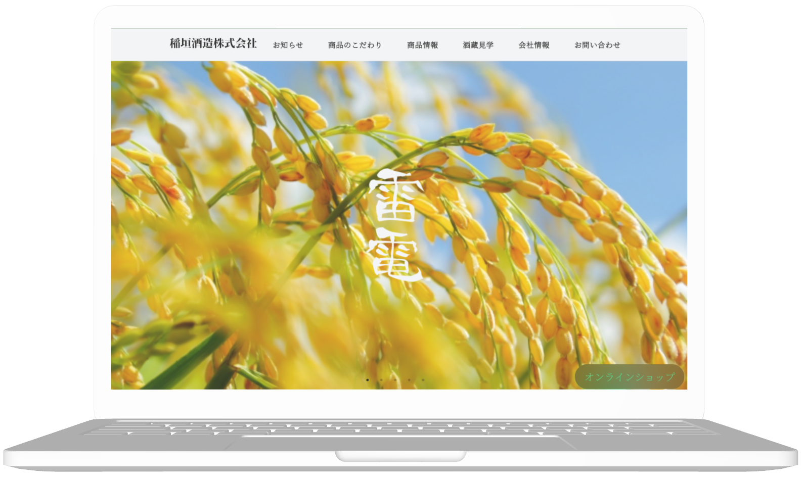

PRODUCTS
-

稲垣酒造株式会社架空サイト
-
サイト概要
酒造メーカー架空サイトになります
-
ターゲット層
伝統を重んじる中高年層や、純米酒や吟醸酒といった高品質な日本酒を好む層を主に。日本酒の歴史や文化に深い関心を持ち、特定の蔵元や銘柄にこだわることが多いこの層に向けては、限定酒や季節限定商品、また特定の食材に合わせたペアリングを提案。
-
目的、ゴール
日本酒の魅力を発信: サイトを通じて、訪問者に日本酒の魅力や製品の独自性を伝え、ブランド認知を向上させます。
ロイヤリティプログラム: 会員登録やメールマガジンなどを通じて、顧客との長期的な関係を構築し、リピーターを増やします。
SNS連携: ソーシャルメディアとの連携を強化し、ユーザーとのコミュニケーションを活発にします。
オンラインショップ: 自社の日本酒を直接購入できるオンラインショップを提供し、売上を拡大します。
プロモーション: 季節限定商品やキャンペーン情報を発信し、ユーザーの購買意欲を刺激します。
-
制作ポイント
ビジュアルとトーンの統一: サイト全体で一貫したデザイン、カラーパレット、フォント、トーンを使用して、ブランドのアイデンティティを強調しました。
ストーリーテリング: 酒造の歴史や職人技、日本酒の製造過程に関するストーリーを含めることで、ブランドの個性を伝える事を考慮しました。
ナビゲーションの簡潔さ: ユーザーが求める情報にスムーズにアクセスできるよう、シンプルで直感的なナビゲーションを設計。
モバイル対応: 多くのユーザーがスマートフォンからアクセスするため、レスポンシブデザインを採用し、モバイル端末でも快適に閲覧できるように作成。
-
担当範囲
ワイヤーフレーム、デザインカンプ、コーティング、画像作成
-
制作期間
約、１ヶ月
-
使用ツール、言語
vs code、figma、html、css、jquery,Gemini
-
制作過程
自身３作品目のサイトになります。今回はscssでコーティング。画像は自動スライドと手動スライドを実装し、テキスト追従機能あり。footerのsnsアイコンには、エフェクトを付けました。